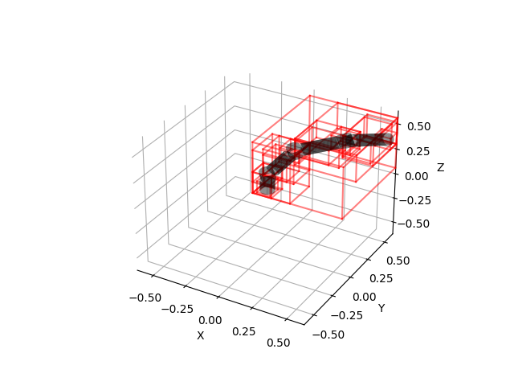

Note
Click here to download the full example code
Robot¶
Plot AABB tree of a robot.
import distance3d.broad_phase
print(__doc__)
import os
import pytransform3d.plot_utils as ppu
from pytransform3d.urdf import UrdfTransformManager
import matplotlib.pyplot as plt
from distance3d import plotting
BASE_DIR = "test/data/"
data_dir = BASE_DIR
search_path = ".."
while (not os.path.exists(data_dir) and
os.path.dirname(search_path) != "distance3d"):
search_path = os.path.join(search_path, "..")
data_dir = os.path.join(search_path, BASE_DIR)
tm = UrdfTransformManager()
filename = os.path.join(data_dir, "robot.urdf")
with open(filename, "r") as f:
robot_urdf = f.read()
tm.load_urdf(robot_urdf, mesh_path=data_dir)
joint_names = ["joint%d" % i for i in range(1, 7)]
for joint_name in joint_names:
tm.set_joint(joint_name, 0.7)
bvh = distance3d.broad_phase.BoundingVolumeHierarchy(tm, "robot_arm")
bvh.fill_tree_with_colliders(tm, make_artists=False)
ax = ppu.make_3d_axis(0.6)
plotting.plot_aabb_tree(ax, bvh.aabbtree_)
tm.plot_collision_objects("robot_arm", ax, wireframe=False, alpha=0.5)
plt.show()
Total running time of the script: ( 0 minutes 0.454 seconds)